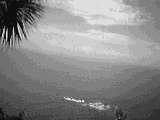
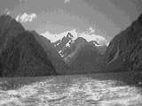

Day 13 — Friday 12 Jan
We made ourselves some breakfast before checking out and heading off on Highway 6. This was, in parts, really scenic and we drove through some quite thick rainforest, which was a really beautiful sight with all of the different greens.
Our first stop was at Bruce Bay, where we did our first driver changeover. This was a really wide bay with beautiful bluey green water washing up against a sandy beach.
We headed off again and drove along for a while before stopping at Knight's Point lookout. Knight's Point is where the Haast road was finally opened in 1965 — Knight was a surveyor's dog. Apparently, there is no land to the South West of this point until Antarctica. We both got chased and landed on by some flying, biting creatures and so moved on.
We drove on past Haast, still on Highway 6 and did a couple of stops at 2 different waterfalls. The first was the Thunder Creek waterfall, about a 10 minute walk from the road. The second was Fantail Falls, only a couple of minutes walk from the roadside. Both of them were worth a visit.
We stopped at the visitor centre at Makarora to put some more fuel into the car and then continued on Highway 6, driving alongside the beautiful Lake Wanaka and took a stop at a lookout for Lake Hawea. Lake Hawea was raised 20 metres in 1958 to assist the power stations downriver.
From here we headed to Wanaka and had quite a long break here. Wanaka seems to have a lot going on, with many mountains providing snow sports during winter, and the lake providing many summer activities. We got some lunch at one of the cafes near the lake and then had a look in some of the clothing shops.
We left Wanaka and started on the last part of our journey, passing a few vineyards on the way. The landscape was a lot drier and browner here, especially after the greenness of the rainforest earlier. Our final stop before arriving in Queenstown was signposted as "Roaring Meg" but this actually turned out to be a power station and not as interesting as it sounded.
We arrived in Queenstown, after having driven past one of the bungy jump sites, and made our way to the Caples Court Motel which we'd booked by phone from Franz Josef. We were given our key and settled ourselves in — it's a large but basic unit.
We walked into the main part of town and called to book a Millford Sounds trip — we've been debating what to do, the options being the coach and cruise trip, a 1.5 hour helicopter ride over the area or the airplane and cruise trip. This time we've decided on a fly/cruise/fly trip as the cruise sounds really good and lots of people have recommended we do it. So, weather permitting, we're going with "Milford Sound Great Journeys" at 8 in the morning.
We wandered to the information centre and gathered a few more ideas before going to a bureau de change to cash a traveller's cheque. One of the places we passed was showing film of the "fly by wire" experience — Jo had mentioned this to us on Sunday. This is a strange contraption, attached by a wire, with an engine which you use to control the speed at which you fly through the air, and handles to enable you to direct yourself. We next decided to take a wander to the gondola, but decided to leave that until tomorrow so we can do the luge too — the luge would still have been running until 9pm but we were both a bit too tired to appreciate it properly. Instead we went to the "Kiwi and nature park" and arrived in time to hear a 10 minute talk about kiwis as well as watching them being fed. We got to see a couple of North Island brown kiwis and found out about the other 5 varieties, and where they can be seen in the wild. The brown Kiwis are a lot bigger than I'd thought, and it was good to see them.
After taking a look at the other birds in the park, including a kea and some very large wood pigeons (they are the biggest flighted bird in New Zealand but how do they fly? ) we walked to the edge of the lake and started looking for likely looking spots for dinner. We ended up at a place called "Lagos", overlooking the lake, which was a pleasant way to end the day.

The view from Knights Point
Day 14 — Saturday 13 Jan
A dissapointing start. We woke up early and started to get ourselves ready. Rich rang "Milford Sound Great Journeys" to check about the flight and was told that the weather wasn't good enough this morning and that we should call them at 1pm as the weather may get better. We were both fairly tired and so went back to sleep for a while.
We had some breakfast and then walked through town and to the Skyline gondola terminal. This is a cable car ride which travels through a gap in the trees and up to the top of one of the many hills in and around Queenstown. The view from the top is great — allowing views of most of the lake, and also of the Remarkables mountain range. At the top of the gondola there is a small complex with shops, cafe and restaurant. And also the Skyline luge — a luge in this case is a 3 wheel cart. This was excellent fun and we bought 5 tickets each. There are 2 tracks — scenic (the easier of the 2) and advanced — each lasting 800m. We both did the scenic twice, and the advanced 3 times. The advanced track has some fairly steep drops. After our fun we stopped off at the cafe for some juice before getting the gondola back down.
Once back in town we walked by the lake again, trying to avoid the huge number of people which seemed to be made up of a disproportional number of bikers. We wandered into Queenstown Gardens which jut out into the lake and we had a very nice stroll around them and stopped to watch the really lame skate boarders on the skate ramp.
As it was now 1pm we called "Milford Sound Great Journeys" to find out if the 2pm flight was on. It was, but was now full. So, despite them telling us to call back at 1pm they hadn't allocated us any space on the flight. We were not impressed with this at all. We got ourselves some lunch and went back to the unit to get the phone numbers of the other operators. We called "Milford Sound Fly & Cruise" and were told that they had space on their 2pm flight, but we'd missed the pick-up and so would need to get to the airport ourselves.
It was now around 1:40 and so we quickly gathered our stuff together, got into the car and headed to the airport. We had a mix-up of directions and couldn't find them. It was 2pm by now and Rich called them on the mobile and we got better directions — it was in the terminal building and not in the out buildings. We parked the car and ran into the terminal building. They'd waited for us. We paid our money and were taken to the plane — a 6 seater "Milford Sound flightseeing" aircraft.
We took off and flew out over Lake Wakatipu, and over some incredible mountains, one of these being Mount Christina. Again, flying over mountains was wonderful, with range after range being visible. We flew over the Milford Sound, heading out into the Tasman Sea to turn around before landing at the airfield.
We caught the shuttle bus to the wharf and just boarded the "Lady Bowen" — one of the Red Boat line boats. We got on, and the boat left. We sailed out, past Mitre Peak and out towards the sea. We were lucky enough to see some fur seals basking on the rocks and also to see some dolphins. Milford Sound is very beautiful, and not a sound at all, it's actually a fjord as it was created by a glacier. We sailed out, beyond the point where the sound just looks like a bay — this is why it was undiscovered for such a long time. We came back on the other side, and got close enough to the stirling falls to be wet by them. Apparently during and after a big rain there are waterfalls everywhere. Rain is something that fjordland isn't short of as it gets in the region of 8 metres per year. We came back past the Bowen falls before docking at the wharf.
We disembarked and caught the shuttle bus back to the air strip. We got on the plane and had a rougher return journey, with quite a few sudden drops. The views were still great, and we flew over the end of the Milford track. We also flew over, and past, the Sutherland falls which looked wonderful — they're fed by a lake at the top (it's not often you can see the lake that feeds a 630m waterfall).
We also got to see a lake high in the mountains which spends 6 months of the year frozen. We flew in over Queenstown and got a good view of the Gondola before landing.
Overall, we thought that the plane was better than the cruise. It's possible that the cruise had been hyped up for us, as it was one of the things that a lot of people had told us to do, and the Lonely Planet said "A cruise on Milford Sound is a must". We still like the idea of doing some sea kayaking around Milford Sound some time.
We got into the car and drove back to the unit for a bit of relaxation. We'd finally found a UK to NZ power adapter and so could charge up the video camera's battery. The adapter we'd brought is one which has pins you can pull out and configure as required — the only problem was that there were 2 possible ways to configure it, and we weren't sure which to do. Rich had also discovered that he'd left the lead for his rechargable shaver at Cayne's, and there didn't seem to be enough charge to get back there. The owner of the Caples Court motel, Wayne, kindly lent Rich his lead and so the shaver got re-charged.
We headed out for dinner and decided to eat in "Chico's" — a sort of bar/restaurant. We had to wait for 20 minutes and so chatted to the chap at the bar about what we'd been upto. We had a pleasant evening but the food was covered in quite sweet sauces and so could have been better in that respect. There was a hen party in Chico's, one of several we'd seen in Queenstown, so I guess that Queenstown is the equivalent of Brighton in that respect.

Milford Sound from the boat
Move on to Queenstown to Nelson or go back to the contents page
Comment on the In and Around Queenstown section